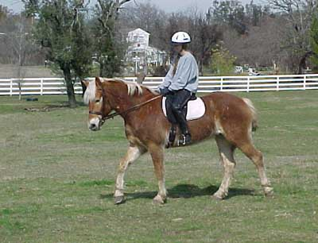
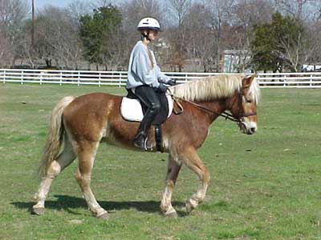
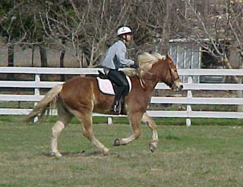
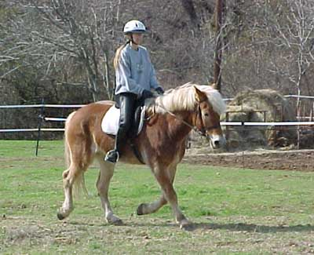
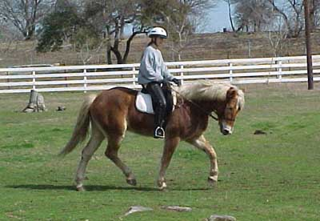
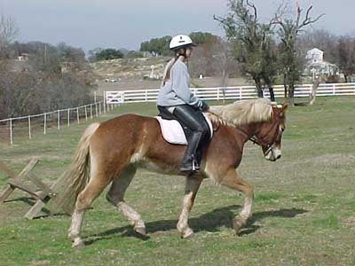

Still a little resistant, but learning
- three weeks ago, if you put pressure on his mouth he'd stop and back
up

It's nice when he reaches forward
into the bit and thinks about rounding up without resistance

I'll like it more when you don't see
the pull on his mouth and he has more self carriage (still, I like his
frame here)

Our first time to canter together.
There's a lot to work on, but hey, he cantered...

I've got the long neck that I like,
but he could round up a bit more. Also a bad angle for it, but I'd say
that front leg is getting some pretty good reach.

Bending to the right isn't always
our favorite thing to do, but this is a nice execution (I'm left handed)

This is a nice trot frame. I'd say
this is what we're working for, although I wouldn't mind a longer neck.